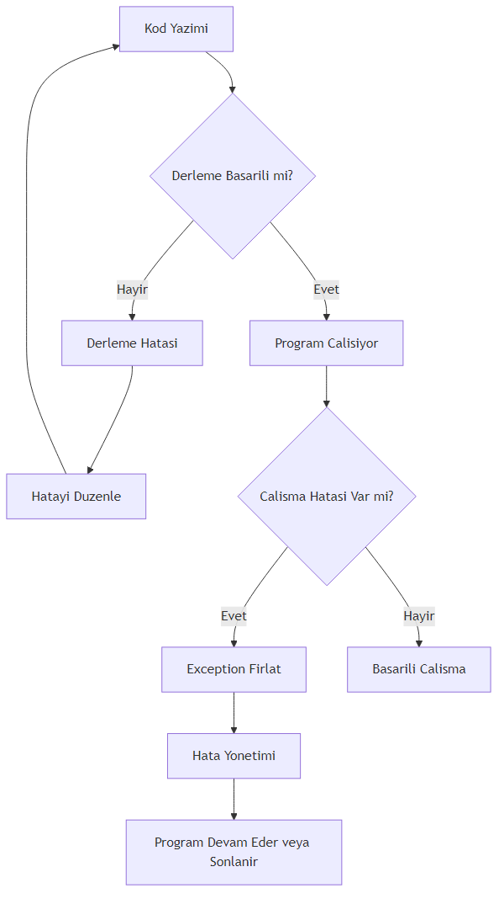
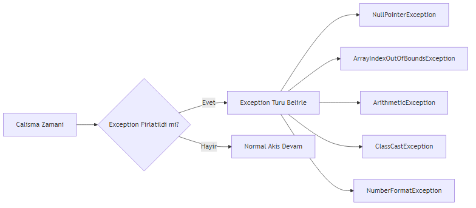
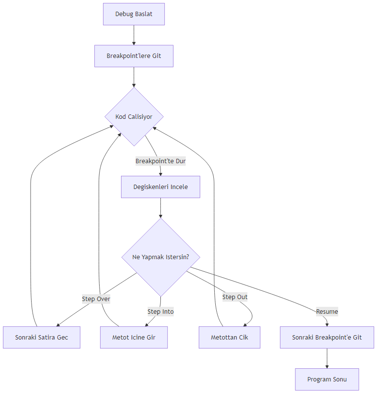

Java’nin Temelleri
2026
---
title: "Sik Yapilan Java Hatalari ve Cozum Rehberi"
subtitle: "Derleme ve Calisma Zamani Hatalarini Tanima ve Cozme"
author: "Java Egitim Ekibi"
date: 2025-03-28
lang: tr
keywords: [Java, hata, exception, debugging, derleme, calisma zamani]
abstract: "Bu bolumde Java programlamada en sik karsilasilan hata turlerini, cozum yontemlerini ve etkili debugging tekniklerini ogreneceksiniz."
---Java’da hatalarla karsilasmak, programlama yolculugunun kacinilmaz bir parcasidir. Bu hatalari anlamak ve cozmek, sizi daha iyi bir gelistirici yapar. Bu bolumde, en yaygin Java hatalarini tanimlayacak, nedenlerini anlayacak ve etkili cozum stratejileri gelistireceksiniz.
Hatalar temelde iki kategoriye ayrilir:
Derleme Zamani Hatalari (Compile-time Errors): Kod derlenirken Java derleyicisi tarafindan yakalanan hatalardir. Bunlar genellikle syntax hatalari, tip uyumsuzluklari veya eksik bildirimlerden kaynaklanir.
Calisma Zamani Hatalari (Runtime Errors): Program calisirken ortaya cikan hatalardir. Bunlara exception denir ve programin aniden sonlanmasina neden olabilir.
Not: Derleme zamani hatalari, calisma zamani hatalarina gore daha kolay cozulur cunku derleyici size hatanin tam yerini ve nedenini soyler.
Hata yonetimi, saglam ve guvenilir yazilim gelistirmenin temelidir. Iyi bir hata yonetimi:

## 24.3 Derleme Zamani HatalariDerleme zamani hatalari, kodunuzu calistirmadan once Java derleyicisi tarafindan tespit edilir. Bu hatalari duzeltmek genellikle basittir.
Java’da her ifadenin sonuna noktali virgul (;) konulmalidir.
public class EksikNoktaliVirgul {
public static void main(String[] args) {
// Hatali kod: noktali virgul eksik
int sayi = 10 // Derleme hatasi: ';' expected
// Dogru kod:
int sayi2 = 20;
System.out.println("Sayi: " + sayi2);
}
}Cozum: Her ifadenin sonunda noktali virgul oldugundan emin olun.
Parantezlerin eslesmemesi yaygin bir hatadir.
public class ParantezHatasi {
public static void main(String[] args) {
// Hatali: parantez sayisi eslesmiyor
// if (x > 5 { // Derleme hatasi
// Dogru:
int x = 10;
if (x > 5) {
System.out.println("x 5'ten buyuk");
}
}
}Java guclu tipli bir dildir, yani bir degiskene yanlis turde deger atamaya calisirsaniz derleme hatasi alirsiniz.
public class TipUyumsuzlugu {
public static void main(String[] args) {
// Hatali: int turune String atanamiyor
// int sayi = "Merhaba"; // Derleme hatasi: incompatible types
// Dogru:
int sayi = 42;
String metin = "Merhaba";
// Alternatif: String'i int'e cevirme
String sayiMetin = "123";
int cevrilenSayi = Integer.parseInt(sayiMetin);
System.out.println("Cevrilen sayi: " + cevrilenSayi);
}
}Bir sinifin private uyesine disaridan erismeye calismak derleme hatasina neden olur.
class BankaHesabi {
private double bakiye = 1000.0;
public double getBakiye() {
return bakiye;
}
}
public class ErisimBelirteciHatasi {
public static void main(String[] args) {
BankaHesabi hesap = new BankaHesabi();
// Hatali: private uyeye dogrudan erisim
// System.out.println(hesap.bakiye); // Derleme hatasi: bakiye has private access
// Dogru: public getter metodu kullan
System.out.println("Bakiye: " + hesap.getBakiye());
}
}Kullanmak istediginiz sinifin tam paket yolunu belirtmezseniz veya import etmezseniz derleme hatasi alirsiniz.
import java.util.ArrayList; // Dogru import
public class ImportHatasi {
public static void main(String[] args) {
// Hatali: import edilmemis sinif
// ArrayList list = new ArrayList(); // Eger import yoksa hata
// Dogru: import edilmis sinif
ArrayList<String> liste = new ArrayList<>();
liste.add("Java");
System.out.println(liste);
// Tam paket yolu ile kullanim (import gerektirmez)
java.util.Date bugun = new java.util.Date();
System.out.println("Bugun: " + bugun);
}
}Calisma zamani hatalari, program calisirken ortaya cikan ve programin aniden sonlanmasina neden olabilen hatalardir.

## 24.9 NullPointerExceptionEn yaygin Java hatalarindan biridir. null degerine sahip bir nesne uzerinde metot cagirmaya calistiginizda olusur.
public class NullPointerOrnegi {
public static void main(String[] args) {
String metin = null;
// Hatali: null uzerinde metot cagirma
try {
int uzunluk = metin.length(); // NullPointerException firlatir
System.out.println("Uzunluk: " + uzunluk);
} catch (NullPointerException e) {
System.out.println("HATA: NullPointerException yakalandi!");
System.out.println("Hata mesaji: " + e.getMessage());
}
// Dogru kullanim: null kontrolu yap
String guvenliMetin = "Merhaba Dunya";
if (guvenliMetin != null) {
System.out.println("Uzunluk: " + guvenliMetin.length());
} else {
System.out.println("Metin null");
}
}
}Cozum: Her zaman null kontrolu yapin veya Optional sinifini kullanin.
Bir diziye gecersiz bir indeksle erismeye calistiginizda olusur.
public class ArrayIndexHatasi {
public static void main(String[] args) {
int[] sayilar = {10, 20, 30, 40, 50};
// Hatali: dizi sinirlari disinda erisim
try {
int hataliDeger = sayilar[10]; // ArrayIndexOutOfBoundsException
System.out.println("Deger: " + hataliDeger);
} catch (ArrayIndexOutOfBoundsException e) {
System.out.println("HATA: Gecersiz dizi indeksi!");
System.out.println("Dizi boyutu: " + sayilar.length);
}
// Dogru kullanim: indeks kontrolu
int indeks = 3;
if (indeks >= 0 && indeks < sayilar.length) {
System.out.println("Deger: " + sayilar[indeks]);
} else {
System.out.println("Gecersiz indeks: " + indeks);
}
// Dongu ile guvenli erisim
for (int i = 0; i < sayilar.length; i++) {
System.out.println("sayilar[" + i + "] = " + sayilar[i]);
}
}
}Genellikle sifira bolme islemi sirasinda olusur.
public class ArithmeticOrnegi {
public static void main(String[] args) {
int pay = 10;
int payda = 0;
// Hatali: sifira bolme
try {
int sonuc = pay / payda; // ArithmeticException
System.out.println("Sonuc: " + sonuc);
} catch (ArithmeticException e) {
System.out.println("HATA: Sifira bolme yapilamaz!");
}
// Dogru kullanim: payda kontrolu
int guvenliPayda = 2;
if (guvenliPayda != 0) {
int sonuc = pay / guvenliPayda;
System.out.println("Sonuc: " + sonuc);
} else {
System.out.println("Payda sifir olamaz");
}
}
}Bir nesneyi uyumsuz bir ture donusturmeye calistiginizda olusur.
public class ClassCastOrnegi {
public static void main(String[] args) {
Object nesne = new Integer(42);
// Hatali: Integer'i String'e cast etmek
try {
String metin = (String) nesne; // ClassCastException
System.out.println("Metin: " + metin);
} catch (ClassCastException e) {
System.out.println("HATA: Gecersiz tip donusumu!");
}
// Dogru kullanim: instanceof kontrolu
if (nesne instanceof String) {
String metin = (String) nesne;
System.out.println("Metin: " + metin);
} else {
System.out.println("Nesne String turunde degil, tur: " + nesne.getClass().getName());
}
}
}Bir String’i sayiya cevirmeye calistiginizda, String gecerli bir sayi formati icermiyorsa olusur.
public class NumberFormatOrnegi {
public static void main(String[] args) {
String gecersizSayi = "123abc";
// Hatali: gecersiz formatta sayi
try {
int sayi = Integer.parseInt(gecersizSayi); // NumberFormatException
System.out.println("Sayi: " + sayi);
} catch (NumberFormatException e) {
System.out.println("HATA: Gecersiz sayi formati!");
System.out.println("Girilen deger: '" + gecersizSayi + "' bir sayi degil");
}
// Dogru kullanim: try-catch ile guvenli donusum
String gecerliSayi = "456";
try {
int sayi = Integer.parseInt(gecerliSayi);
System.out.println("Basarili donusum: " + sayi);
} catch (NumberFormatException e) {
System.out.println("Donusum basarisiz");
}
}
}Mantiksal hatalar, programin derlenip calismasina ragmen beklenen sonucu vermemesine neden olan hatalardir. Bunlar en zor tespit edilen hatalardir.
Dongu kosulu hicbir zaman false olmazsa, program sonsuza kadar calisir.
public class SonsuzDongu {
public static void main(String[] args) {
// Hatali: sonsuz dongu
/*
int i = 0;
while (i < 10) {
System.out.println("Sonsuz dongu...");
// i++; // Bu satir unutulmus!
}
*/
// Dogru kullanim
int i = 0;
while (i < 10) {
System.out.println("i = " + i);
i++; // Kosulu degistiren ifade
}
}
}Kosul ifadelerinde yapilan mantik hatalari.
public class YanlisKosul {
public static void main(String[] args) {
int yas = 25;
// Hatali: yanlis operator kullanimi
// if (yas = 18) { // Atama operatoru, karsilastirma degil
// Dogru
if (yas >= 18) {
System.out.println("Yetiskin");
} else {
System.out.println("Cocuk");
}
// Diger yaygin hata: && yerine & kullanimi
boolean kosul1 = true;
boolean kosul2 = false;
// & her iki kosulu da degerlendirir (kisa devre yapmaz)
if (kosul1 & kosul2) {
System.out.println("Bu calismaz");
}
// && kisa devre yapar (ilk kosul false ise ikinciye bakmaz)
if (kosul1 && kosul2) {
System.out.println("Bu da calismaz");
}
}
}Performans sorunlarina yol acan gereksiz nesne olusturma.
public class GereksizNesne {
public static void main(String[] args) {
// Hatali: her dongude yeni String olusturma
long baslangic = System.currentTimeMillis();
String sonuc = "";
for (int i = 0; i < 10000; i++) {
sonuc += i; // Her seferinde yeni String nesnesi olusur
}
long bitis = System.currentTimeMillis();
System.out.println("String ile gecen sure: " + (bitis - baslangic) + " ms");
// Dogru: StringBuilder kullanimi
baslangic = System.currentTimeMillis();
StringBuilder sb = new StringBuilder();
for (int i = 0; i < 10000; i++) {
sb.append(i); // Ayni nesne uzerinde islem yapilir
}
sonuc = sb.toString();
bitis = System.currentTimeMillis();
System.out.println("StringBuilder ile gecen sure: " + (bitis - baslangic) + " ms");
}
}Etkili hata ayiklama, bir gelistiricinin en onemli becerilerinden biridir.
En basit debugging yontemi, kodun belirli noktalarina System.out.println() eklemektir.
public class KonsolDebug {
public static int faktoriyel(int n) {
System.out.println("DEBUG: faktoriyel(" + n + ") cagrildi");
if (n < 0) {
System.out.println("DEBUG: Gecersiz girdi: " + n);
return -1; // Hata kodu
}
if (n == 0 || n == 1) {
System.out.println("DEBUG: Temel durum, n = " + n);
return 1;
}
int sonuc = n * faktoriyel(n - 1);
System.out.println("DEBUG: faktoriyel(" + n + ") = " + sonuc);
return sonuc;
}
public static void main(String[] args) {
int sayi = 5;
System.out.println(sayi + "! = " + faktoriyel(sayi));
}
}Modern IDE’ler (Eclipse, IntelliJ IDEA, NetBeans) guclu debugger araclari sunar.
Temel Debugger Ozellikleri: - Breakpoint (Kesme Noktasi): Kodun belirli bir satirinda durma - Step Over: Bir sonraki satira gecme - Step Into: Bir metot cagrisinin icine girme - Step Out: Metottan cikma - Watch: Degisken degerlerini izleme - Evaluate Expression: Anlik ifade degerlendirme

## 24.21 Stack Trace OkumaBir exception firlatildiginda, Java size stack trace (yigin izi) gosterir. Bu, hatanin nerede olustugunu anlamak icin cok degerlidir.
public class StackTraceOrnegi {
public static void metotA() {
metotB();
}
public static void metotB() {
metotC();
}
public static void metotC() {
// Hata olusturan kod
String str = null;
str.length(); // NullPointerException
}
public static void main(String[] args) {
try {
metotA();
} catch (NullPointerException e) {
System.out.println("=== STACK TRACE ===");
e.printStackTrace();
System.out.println("\n=== HATA MESAJI ===");
System.out.println("Hata: " + e.getMessage());
System.out.println("\n=== HATA ANALIZI ===");
StackTraceElement[] elements = e.getStackTrace();
for (StackTraceElement element : elements) {
System.out.println("Sinif: " + element.getClassName());
System.out.println("Metot: " + element.getMethodName());
System.out.println("Satir: " + element.getLineNumber());
System.out.println("---");
}
}
}
}Stack Trace Okuma Ipucu: Stack trace’i en ustten (hatalarin ilk olustugu yer) okumaya baslayin. En ustteki satir, hatanin kaynagidir.
Try-catch bloklari, exception’lari yonetmek icin kullanilir.
import java.io.BufferedReader;
import java.io.FileReader;
import java.io.IOException;
public class TryCatchOrnegi {
public static void main(String[] args) {
BufferedReader reader = null;
try {
reader = new BufferedReader(new FileReader("dosya.txt"));
String satir;
while ((satir = reader.readLine()) != null) {
System.out.println(satir);
}
} catch (IOException e) {
System.out.println("Dosya okuma hatasi: " + e.getMessage());
} finally {
// Her durumda calisir
try {
if (reader != null) {
reader.close();
}
} catch (IOException e) {
System.out.println("Kapatma hatasi: " + e.getMessage());
}
}
// Java 7+ ile try-with-resources
try (BufferedReader br = new BufferedReader(new FileReader("dosya2.txt"))) {
String satir;
while ((satir = br.readLine()) != null) {
System.out.println(satir);
}
} catch (IOException e) {
System.out.println("Hata: " + e.getMessage());
}
}
}Onemli Not: Catch bloklarinda exception’lari bos gecmeyin. Her zaman anlamli bir hata mesaji yazdirin veya loglayin.
Kendi exception siniflarinizi olusturarak daha anlamli hata mesajlari verebilirsiniz.
// Ozel exception sinifi
class YetersizBakiyeException extends Exception {
private double eksikMiktar;
public YetersizBakiyeException(String mesaj, double eksikMiktar) {
super(mesaj);
this.eksikMiktar = eksikMiktar;
}
public double getEksikMiktar() {
return eksikMiktar;
}
}
class BankaHesabi2 {
private double bakiye;
public BankaHesabi2(double bakiye) {
this.bakiye = bakiye;
}
public void paraCek(double miktar) throws YetersizBakiyeException {
if (miktar > bakiye) {
double eksik = miktar - bakiye;
throw new YetersizBakiyeException(
"Yetersiz bakiye! Cekilmek istenen: " + miktar +
", Mevcut bakiye: " + bakiye, eksik);
}
bakiye -= miktar;
System.out.println("Para cekildi. Kalan bakiye: " + bakiye);
}
}
public class OzelExceptionOrnegi {
public static void main(String[] args) {
BankaHesabi2 hesap = new BankaHesabi2(1000);
try {
hesap.paraCek(1500);
} catch (YetersizBakiyeException e) {
System.out.println("HATA: " + e.getMessage());
System.out.println("Eksik miktar: " + e.getEksikMiktar());
}
}
}Hata yonetimini kolaylastirmak icin kodunuzu duzenli ve okunabilir tutun.
Iyi Uygulamalar: - Anlamli degisken ve metot isimleri kullanin - Kodu yorumlarla aciklayin - Her metot tek bir is yapsin (Single Responsibility) - Exception’lari uygun seviyede yakalayin - Gereksiz try-catch bloklarindan kacinin
Bu bolumde Java’da sik karsilasilan hata turlerini ve cozum yontemlerini ogrendiniz:
Unutmayin: Hatalar ogrenme firsatidir. Her hata, Java’nin nasil calistigini daha iyi anlamanizi saglar.
| Terim | Aciklama |
|---|---|
| Derleme Zamani | Kodun Java bytecode’una donusturuldugu asamadir. |
| Calisma Zamani | Programin calistirildigi asamadir. |
| Exception | Programin normal akisini bozan beklenmedik durumdur. |
| Syntax | Programlama dilinin yazim kurallaridir. |
| Stack Trace | Bir exception olustugunda cagri yigininin durumunu gosteren rapordur. |
| Breakpoint | Debugging sirasinda kodun duracagi noktadir. |
| NullPointerException | null referans uzerinde islem yapmaya calisinca olusan exception’dur. |
| Try-Catch | Exception’lari yakalamak ve yonetmek icin kullanilan yapidir. |
| Finally | Try-catch blogundan sonra her durumda calisan bloktur. |
| Debugging | Programdaki hatalari bulma ve duzeltme surecidir. |
Derleme zamani ve calisma zamani hatalari arasindaki temel fark nedir?
NullPointerException neden olusur ve nasil onlenebilir?
Stack trace nasil okunur ve hata ayiklamada neden onemlidir?
Try-catch-finally yapisinin amaci nedir?
Ozel exception siniflari olusturmanin avantajlari nelerdir?
Alistirma 1: Hata Turlerini Tanima
Asagidaki kod parcaciklarindaki hata turlerini belirleyin ve duzeltin:
// Kod 1
int x = "Merhaba";
// Kod 2
int[] dizi = {1, 2, 3};
System.out.println(dizi[5]);
// Kod 3
String str = null;
System.out.println(str.length());Alistirma 2: Guvenli Bolme Islemi
Kullanicidan iki sayi alan ve bolme islemi yapan bir program yazin. Sifira bolme ve gecersiz girdi durumlarini try-catch ile yonetin.
Alistirma 3: Ozel Exception Sinifi
Bir ogrenci not sistemi icin GecersizNotException adinda ozel bir exception sinifi olusturun. Not 0-100 araliginda degilse bu exception’i firlatan bir metot yazin.
Alistirma 4: Debugging Alistirmasi
Asagidaki kodda mantiksal hatayi bulun ve duzeltin:
public class OrtalamaHesapla {
public static double ortalamaBul(int[] sayilar) {
int toplam = 0;
for (int i = 0; i <= sayilar.length; i++) {
toplam += sayilar[i];
}
return toplam / sayilar.length;
}
public static void main(String[] args) {
int[] notlar = {85, 90, 78, 92, 88};
System.out.println("Ortalama: " + ortalamaBul(notlar));
}
}Alistirma 5: Kapsamli Hata Yonetimi
Bir dosyadan ogrenci bilgilerini okuyan ve isleyen bir program yazin. Asagidaki hata durumlarini yonetin: - Dosya bulunamazsa - Dosya okunamazsa - Veri formati gecersizse - Matematiksel hatalar olursa
Her hata durumu icin anlamli mesajlar gosterin ve programin duzgun sekilde sonlanmasini saglayin.